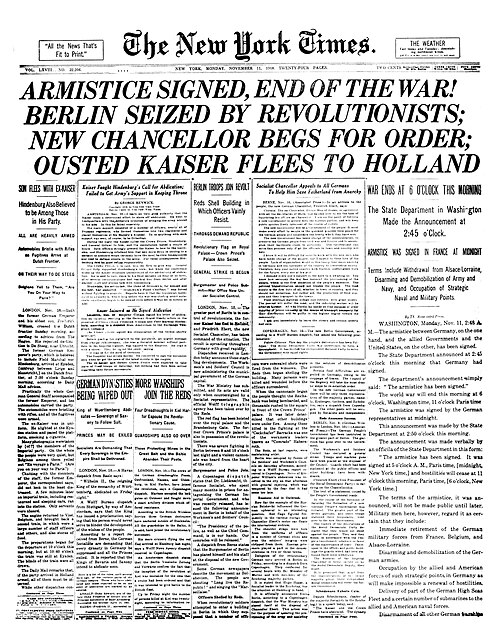

Newspaper
Contents
hide
From Wikipedia, the free encyclopedia
A newspaper is a periodical publication containing written information about current events and is often typed in black ink with a white or gray background. Newspapers can cover a wide variety of fields such as politics, business, sports, art, science, and religions. They often include materials such as opinion columns, weather forecasts, reviews of local services, obituaries, birth notices, crosswords, sudoku puzzles, editorial cartoons, comic strips, and advice columns.
Most newspapers are businesses, and they pay their expenses with a mixture of subscription revenue, newsstand sales, and advertising revenue. The journalism organizations that publish newspapers are themselves often metonymically called newspapers. Newspapers have traditionally been published in print (usually on cheap, low-grade paper called newsprint). However, today most newspapers are also published on websites as online newspapers, and some have even abandoned their print versions entirely.

Front page of the newspaper The New York Times on Armistice Day , 1918